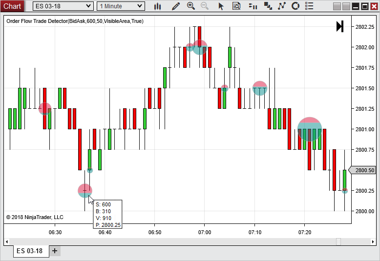
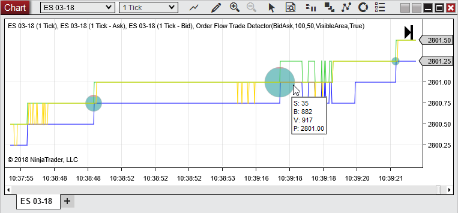
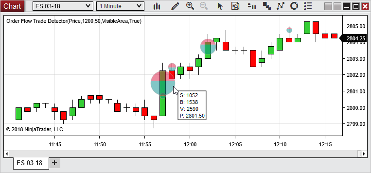
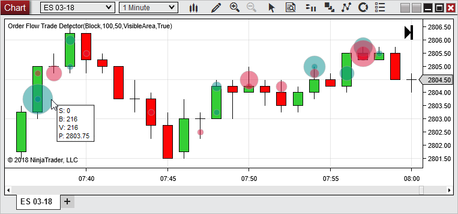

Description
An indicator which displays significant trade volume either at a consistent bid/ask level, at price levels, or individual block trades. The marker is colored based on what percent of orders were considered buy or sell orders. Buy volume is volume that occurred at the ask or higher. Sell volume is volume that occurred at the bid or lower.
 Order Flow Trade Detector Overview
Order Flow Trade Detector Overview
Display
In the image below we can see where considerable volume has occurred per the settings that were input. The markers are plotted on the Last price, once the market has finished building.
Hovering the mouse over the trade marker will display information about the marker by default. Here there was a volume of 600 on the sell side (indicated by S: 600), there was a volume of 310 on the buy side (indicated by the B: 310), the total volume was 910 (indicated by the V: 910), and the marker is at the price of 2800.25 (indicated by the P: 2800.25).

Using the Order Flow Trade Detector
There are 3 main modes to help indicate areas of volume that may be of interest in your order flow analysis.
1)
2)
3)
1) To detect areas of significant volume that occurred while the last price jumped between a bid and ask price that stayed the same, across multiple bars, you would select .

2) To detect large volume that occurred at a price level within the bar, you would select as seen in the image below.

3) To detect large volume from individual ticks, you would select as seen in the image below.

Notes:
1. If there is an excessive amount of trade markers on the screen you will need to increase the Minimum volume for a marker to decrease the number of markers.
2. To plot historically requires historical bid/ask stamped tick data. See the Data by Provider section for information on what providers offer historical bid/as stamped tick data.
3. May not display on Forex instruments as expected. Many Forex data providers do not provide volume or they just assign a volume of 10,000 or 100,000 to every tick.
4. The study can appear to draw to an unexpected bar on bars types which call RemoveLastBar (such as Renko, LineBreak etc.) due to the way these bars types update already-closed bars.
|
|
Order Flow Trade Detector Parameters
Base large volume on
|
Consistent bid/ask
|
With this setting volume will continue to accumulate to form a marker so long as the bid and ask levels stay the same. If the bid and/or ask price changes, a new accumulation of volume will occur to create the next marker. The marker will be plotted on the Last price.
|
Price
|
With this setting volume will continue to accumulate to form a marker at each price level within a bar. Each new bar will restart accumulation of volume at each price level of the current bar.
|
Block
|
With this setting a marker will be plotted for each tick that has a volume equal or greater than the .
|
|
Minimum volume for marker
|
Indicates how much volume must occur before a marker is plotted
|
Maximum marker size
|
Indicates the diameter in pixels of the marker which has the largest volume
|
Base marker size on
|
Visible area
|
The size associated to markers will be distributed based on the volume of the markers in the visible area
|
Session
|
The size associated to markers will be distributed based on the volume of the markers in the current session
|
|
Show values on hover
|
When enabled and the mouse is hovered over a marker the buy volume, sell volume, total volume, and price will be displayed.
Notes: The values displayed will be for the top marker if markers overlap one another. Disabling this setting can improve performance when there is a large amount of markers on the screen.
|
Color for buys
|
Color used for volume received at the ask or more
|
Color for sells
|
Color used for volume received at the bid or less
|
Color for outline
|
Outline color of the marker
|
Opacity
|
Opacity of the marker
|
|